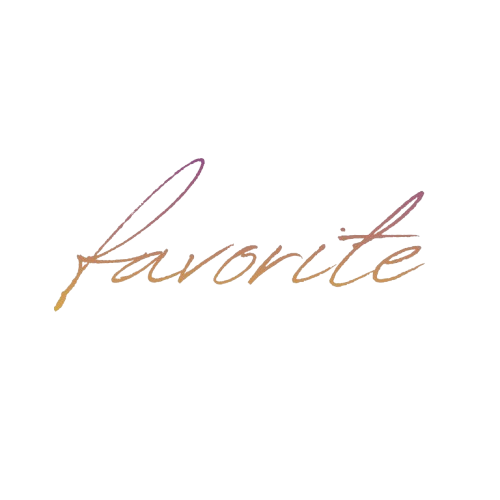
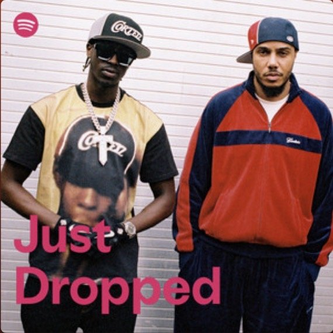
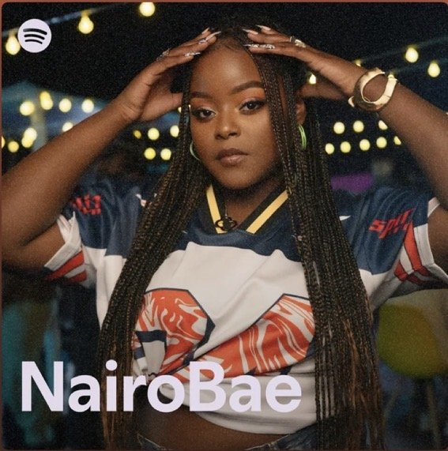
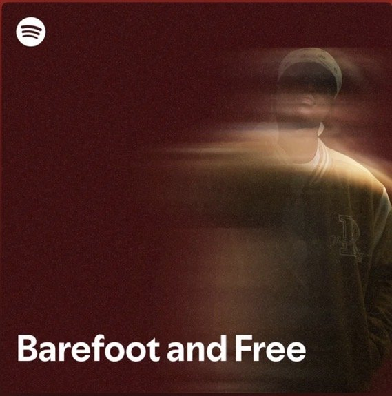
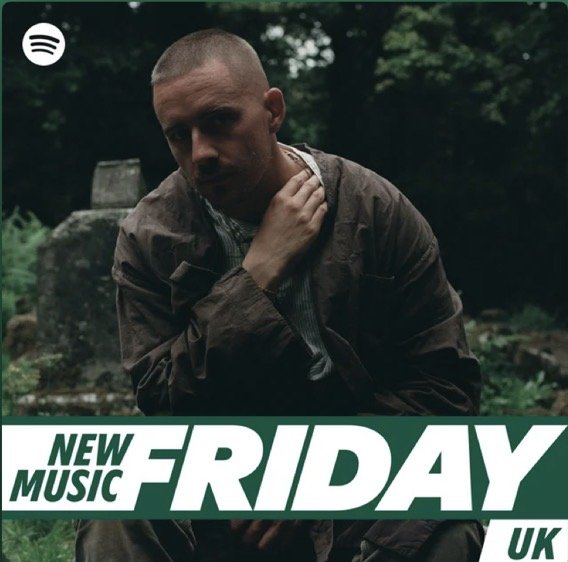
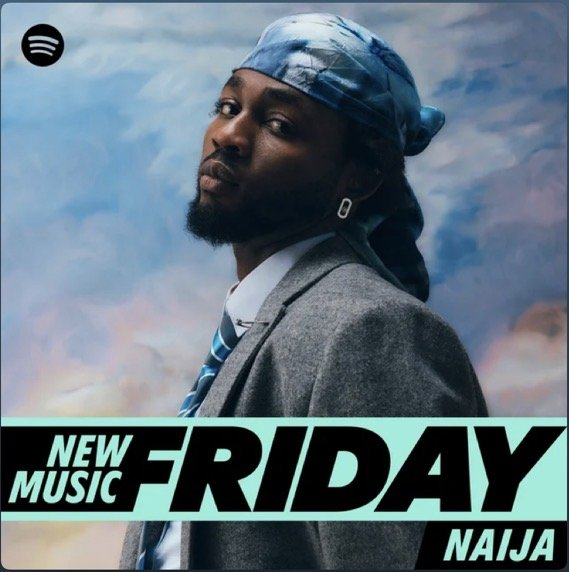
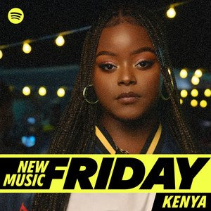
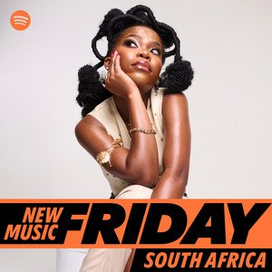
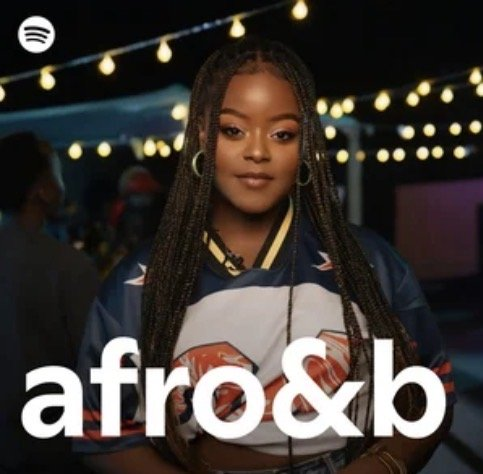

Favorite (released April 2026) is not so much a strategy case study but rather a validation case study. Throughout the course of the BCZIKN project, one of my biggest challenges has been figuring out how to market East African-made music as more than the geographic label that precedes it. Especially in the beginning of this project, songs would be routinely filed alongside other “Afro-[X]” tags (afro-indie, afro-R&B, afro-acoustic), regardless of whether the song actually belonged to that genre, or whether its audience was even based in Africa to begin with.
Favorite is, to date, the clearest evidence yet that this is starting to shift; upon release, the single saw an editorial sweep from both regional outlets and international R&B outlets. No new tactic has driven this result - instead, it is a consistent identity and brand messaging finally being read correctly by editorial curators, instead of filtered through a geographic label first.
- Released
- April 2026
- Focus
- Long-form brand building
- Role
- Brand positioning & press messaging
- 10Kstreams in 3 days
- 27Kmonthly listeners
- 8Spotify editorial playlists
Outcomes
Reach + Editorial Coverage
Favorite was quite successful, racking up 10,000 streams in 3 days. By the end of the release period, IkeN sat at 27K monthly listeners.
The song landed a wide editorial sweep, from local recognition - New Music Friday Kenya - to wider regional playlisting - New Music Friday Naija (Nigeria), New Music Friday South Africa, Barefoot and Free (wider Africa vibes playlist), and Afro&B (wider African R&B playlist) - to international editorial recognition R&B Right Now (Canadian/Global R&B playlist), Just Dropped (new UK arrivals), and New Music Friday UK, showcasing the shift from Spotify’s editorial system reading IkeN as a cross-regional/internationally appealing artist instead of a regional one.







